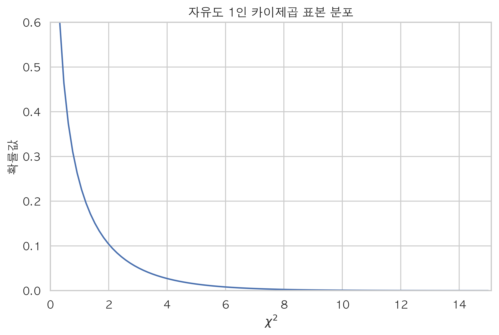

All About Correlation between Categorical Variables - Chi square test of association
탄자니아의 식수개발사업 관련 데이터를 분석하면서 거의 모든 변수들이 명목형 카테고리 변수인 데이터를 처음 접하게 되었습니다. 카테고리 값들이 서로 상이한 변수들을 보며, 어떻게 하면 카테고리 변수들간의 상관 관계를 분석할 수 있을까 공부를 하게 되었으며, 그 과정에서 얻은 인싸이트를 정리해 보았습니다.
두 방법을 통해 카테고리 변수 간의 상관관계를 확인해 볼 수 있는데 $\chi^2$ (Chi-square) contingency test (카이제곱 테스트)와 두 변수 간의 conditional entropy (조건부 엔트로피)를 활용한 Theil’s U가 있습니다.
카이제곱 테스트로는 두 변수간의 관계가 독립적인지 상관관계를 가지는지 확인해 볼 수 있지만 두 카테고리 변수간의 관계의 세기는 알 수가 없습니다. 대다수가 알고 있는 Pearson, Kendall, Spearman 상관 계수를 활용하려 해 보아도 명목형 카테고리 변수간의 관계의 세기를 잴 수 없습니다. 이런 명목적 카테고리 변수 간의 관계의 세기는 Theil’s U를 이용하여 알아볼 수 있는데 이 부분은 Part 2에서 다루도록 하겠습니다.
쉬운 예를 하나 생각해 봅시다. A 대학교에 의대와 법대가 있다고 가정해 봅니다. 한 정치학도가 학생들의 정치적 성향이 학생들이 다니는 단과 대학과 상관 관계가 있을 것이라 의문을 제기했습니다. 그는 랜덤하게 두 단과 대학의 학생에게 진보와 보수 중 어떤 정치적 성향을 가지고 있는지 질문을 했고 그 결과를 아래와 같은 표 (contingency table) 로 나타낼 수 있습니다.
| 진보 성향 | 보수 성향 | ||
|---|---|---|---|
| A 대학교 의대 | A 대학교 의대 진보 성향 학생 수 | A 대학교 의대 보수 성향 학생 수 | 총 A 대학교 의대 학생들 수 |
| A 대학교 법대 | A 대학교 법대 진보 성향 학생 수 | A 대학교 법대 보수 성향 학생 수 | 총 A 대학교 법대 학생들 수 |
| 총 진보 성향 학생 수 | 총 보수 성향 학생 수 |
카이제곱 검정이 위와 같은 contingency table에 적용될 때에는 주로 두 카테고리 변수가 상관관계가 있는지 없는지를 알아보기 위함 입니다. 이것을 chi square test of association (카이제곱 연관성 검정) 이라고 합니다. 만약 두 단과 대학의 학생들의 정치적 성향이 아래와 같이 같은 비율로 나누어 진다면 두 카테고리 변수 사이에는 관계가 있다고 볼 수 없습니다. A대학교 의대 학생이던 법대 학생이던 간에 진보 성향을 지진 학생과 보수 성향을 지닌 학생의 비율이 같은 것을 확인할 수 있습니다.
| 진보 성향 | 보수 성향 | |
|---|---|---|
| A 대학교 의대 | 55% | 45% |
| A 대학교 법대 | 55% | 45% |
만약 아래와 같이 상이한 비율로 나뉘어 졌다면 두 카테고리 변수 사이에 관계가 통계적으로 유의한지에 대한 테스트를 해볼 수 있습니다.
| 진보 성향 | 보수 성향 | |
|---|---|---|
| A 대학교 의대 | 55% | 45% |
| A 대학교 법대 | 45% | 55% |
이 때의 귀무 가설은 “정치적 성향에 대하여 A 대학교 의대와 법대를 다니는 학생 사이에는 차이가 없다”가 되며 이 때 카이 제곱 연관성 검정은 귀무 가설이 맞다는 가정 하에 A대학교 의대와 법대를 다니는 학생들을 랜덤하게 뽑아 물어봤을 때 위와 같은 정치적 성향의 차이가 충분히 큰지 아니면 그저 우연인지를 확인 합니다.
이제 실제 숫자를 통해 계산을 해보도록 하겠습니다. 계산을 쉽게 하기 위해 A 대학교의 총 학생 수를 100명이라고 하겠습니다.
| 진보 성향 | 보수 성향 | ||
|---|---|---|---|
| A 대학교 의대 | a | b | 46명 |
| A 대학교 법대 | c | d | 54명 |
| 52명 | 48명 | 100명 |
그저 단순한 우연의 일치라면 A 대학교 의대 학생이 진보적 정치 성향을 가지고 있을 확률은 $\frac{46}{100} \times \frac{52}{100} = 0.2392$ 입니다. 즉 a에 들어갈 기대값 $E_a$ (Expected frequency of cases)은 $0.2392$ 이고, 각 cell a, b, c, d에 들어갈 값은 $R$이 각 행을 더한 값 (marginal total of the row)이고 $C$ (marginal total of the column) 가 각 열을 더한 값일 때, $E_{cell} = \frac{R}{N} \times \frac{C}{N} \times N$ 가 됩니다. 이 식을 일반화 시켜 보면, $E_{cell} = \frac{R \times C}{N}$ 으로 나타낼 수 있고, 이 값은 귀무 가설이 맞다는 가정 하에 가질 수 있는 값들 이고, 아래와 같습니다.
| 진보 성향 | 보수 성향 | ||
|---|---|---|---|
| A 대학교 의대 | $E_a = \frac{46 \times 52}{100} = 23.92$ | $E_b = \frac{46 \times 48}{100} = 22.08$ | 46명 |
| A 대학교 법대 | $E_c = \frac{54 \times 52}{100} = 28.08$ | $E_d = \frac{54 \times 48}{100} = 25.92$ | 54명 |
| 52명 | 48명 | 100명 |
즉, 귀무 가설이 맞을 때, 우리는 두 A대학교 의대 학생들과 법대 학생들을 기대할 수 있고 이들이 같은 비율로 진보 성향과 보수 성향을 가지고 있다고 말할 수 있습니다. 그리고 이 값이 위에서 계산한 $E$ 의 값이 됩니다. 관찰된 값 $O$ (observation) 과 함께 $E$ (Expectation) 를 아래 빨간 색으로 표시를 했습니다.
| 진보 성향 | 보수 성향 | ||
|---|---|---|---|
| A 대학교 의대 | 15 23.92 |
31 22.08 |
46명 |
| A 대학교 법대 | 37 28.08 |
17 25.92 |
54명 |
| 52명 | 48명 | 100명 |
카이제곱 값은 행과 열 값에 따라 계산 되며 행과 열의 갯수가 2가 넘어갈 때, 아래와 같이 계산 됩니다.
하지만 행과 열의 갯수가 정확히 2일 때에는, 위의 식에서 correction of continuity (연속성 수정) 을 해 주어야 합니다. correction of continuity가 필요한 이유는 두가지 값을 가지는 이항확률변수를 연속확률변수로 접근시킬 때 발생되는 오차를 줄이기 위해서 이며 0.5를 $O$와 $E$의 차이에서 빼 줍니다.
| 진보 성향 | 보수 성향 | ||
|---|---|---|---|
| A 대학교 의대 | $\frac{(\left\lvert 15 - 23.92\right\rvert-0.5)^2}{23.92} = 2.964$ | $\frac{(\left\lvert 31 - 22.08\right\rvert-0.5)^2}{22.08} = 3.21$ | |
| A 대학교 법대 | $\frac{(\left\lvert 37 - 28.08\right\rvert-0.5)^2}{28.08} = 2.525$ | $\frac{(\left\lvert 17 - 25.92\right\rvert-0.5)^2}{25.92} = 2.735$ | |
| sum: $\chi^2 = 11.434$ |
다음 스탭은 자유도(degrees of freedom)에 따라 모양이 변하는 카이제곱 표본분포 (theoretical sampling distribution of chi-square)를 사용하여 검정을 합니다. 가설 검정을 하기 위한 유의확률 (p-value)를 구하기 위해서는 자유도를 알아야 하는데 카테고리 변수가 하나가 있을 때 (1차원)의 자유도는 카테고리 갯수 - 1 입니다. 하지만 2차원일때는 다른 식을 사용하게 됩니다. 아래와 같이 행과 열이 각각 2개씩 있을 때 어떤 정수를 어느 cell에나 넣을 수 있지만 총 합계는 일치해야 합니다. 여기에서 “자유”는 총 합에 제한 되어 있습니다. 10을 a에 넣었을 때 b=40, c=38, d=2로 다른 cell들의 값이 모두 정해지게 됩니다. 마찬가지로 20을 c에 넣었을 때 a=28, b=22, d=20가 됩니다. 이렇게 행과 열이 각각 2개씩 있을 때의 자유도는 어떤 경우에도 1이 됩니다.
| cell a = ? | cell b = ? | 50 |
| cell c = ? | cell d = ? | 40 |
| 48 | 42 | 90 |
이번에는 2개의 행과 3개의 열이 있다고 한다면, “자유”는 조금 오르게 되지만 여전히 총합에 제한되게 됩니다. 마찬가지로 10을 a에 넣었을 때 d는 15로 정해지게 됩니다. 하지만 나머지 4개의 cell들은 어떠한 정수를 넣어도 됩니다. 이 4개의 cell중 하나에 어떤 정수를 넣었을 때 나머지 cell들의 값은 모두 정해지게 됩니다. 이렇게 카이제곱을 계산할 표에서 2개의 열과 3개의 행 (혹은 3개의 열과 2개의 행) 이 있다면 자유도는 어떤 상황에서도 2가 됩니다.
| cell a = ? | cell b = ? | cell c = ? | 50 |
| cell d = ? | cell e = ? | cell f = ? | 40 |
| 25 | 40 | 25 | 90 |
일반적으로 카이 제곱 검정 과정을 걸칠 때 자유도는 아래와 같으며 $r$은 행의 갯수 $c$는 열의 갯수를 나타냅니다.
위의 A 대학교 카이제곱 검정을 할 때의 자유도는 $df = (2-1)(2-1) = 1$ 이 되며 아래의 그래프는 자유도가 1 때의 카이제곱 확률분포를 보여줍니다.
1 | import scipy as sp |

위에서 계산한 $\chi^2 = 11.434$는 유의 수준 (level of significance) 0.001일때의 카이제곱 값 10.828을 넘는 수치 입니다. 즉, 귀무가설 “정치적 성향에 대하여 A 대학교 의대와 법대를 다니는 학생 사이에는 차이가 없다”이 맞다면 위의 관찰된 A 대학교 의대와 법대를 다니는 학생 사이에서 정치적 성향의 차이를 그저 우연으로 관찰될 확률 (p-value)이 0.001%보다 작다는 결론을 내릴 수 있습니다. 위의 그래프를 보아도 카이제곱값이 11.434일때의 확률이 0에 가깝다는 것을 확인할 수 있습니다. 그러므로 이 정치학도는 귀무가설을 기각할 수 있습니다.
아래는 탄자니아 식수개발관련 사업 데이터 입니다. 제가 세운 가설은 “펌프로 끌어올릴 수 있는 우물물의 양 (quantity_group)과 우물물의 출처가 어디인지 (source_type)을 나타내는 두 변수가 상관관계를 가진다” 였고, 이를 테스트 해 보려고 합니다. 귀무가설은 두 변수가 독립이다 이며 대립가설은 이 두 변수가 상관관계를 가진다 입니다.
1 | import pandas as pd |
두 변수간의 contingency table을 나타내고, 이 table을 scipy의 sp.stats.chi2_contingency함수를 사용하여 유의 확률을 확인합니다.
1 | pd.crosstab(index=df.source_type, columns = df.quantity_group) |
| quantity_group | dry | enough | insufficient | seasonal | unknown |
|---|---|---|---|---|---|
| source_type | |||||
| borehole | 1472 | 7229 | 2680 | 283 | 285 |
| dam | 65 | 372 | 180 | 30 | 9 |
| other | 36 | 134 | 68 | 12 | 28 |
| rainwater harvesting | 150 | 295 | 644 | 1182 | 24 |
| river/lake | 867 | 6173 | 2375 | 852 | 110 |
| shallow well | 2028 | 8443 | 4782 | 1354 | 217 |
| spring | 1628 | 10540 | 4400 | 337 | 116 |
1 | chi2, p, dof, ex = sp.stats.chi2_contingency(pd.crosstab(index=df.source_type, columns = df.quantity_group)) |
chi-square test statistics = 9398.454444629386
p-value = 0.0
degree of freedom = 24
위의 결과의 유의확률(p-value)은 카이제곱 통계량이 9398.454로 나올 확률을 나타내며 0에 가깝다는 것을 확인할 수 있습니다. 즉, 귀무가설인 “펌프로 끌어올릴 수 있는 우물물의 양 (quantity_group)과 우물물의 출처가 어디인지 (source_type)을 나타내는 두 변수간의 상관관계가 없다”를 기각 할 수 있는 p-value 0을 가집니다. 하지만 시작부분에서 언급했다시피 우리는 귀무가설만 기각했을 뿐, 상관관계가 얼만큼 있는지는 카이제곱 검정으로는 확인할 수 없습니다. 다음 포스팅에는 Theil’s U를 이용한 명목적 카테고리 변수 사이의 상관관계의 세기를 알아보겠습니다.